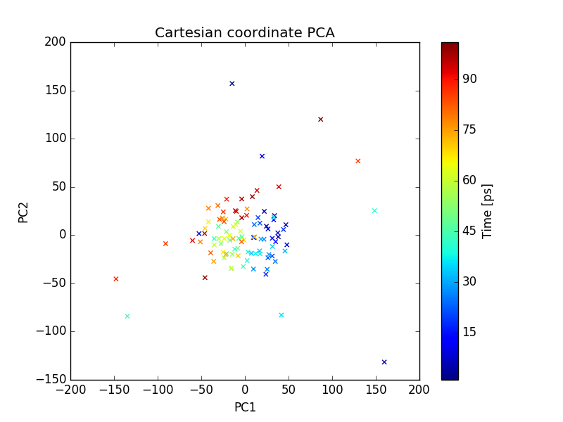

PCA Tutorial¶
PCA of a MD trajectory¶
In this tutorial, we will be performing PCA on a MD trajectory of protein. Before doing the PCA we need to prepare the trajectory which includes, removing periodicity, removing water molecules. Most of the MD packages have options to do this. We will be using GROMACS for this tutorial purpose. We will be using .xtc format for trajectory and .pdb for topology file. Any other common trajectory format should also work with the MODE-TASK.
1. Preparation of trajectory
1.1. Remove periodicity
gmx_mpi trjconv -s md_01.tpr -f md_01.xtc -o md_01_noPBC.xtc -pbc mol -ur compact
select system to apply it.
1.2. Remove water
gmx_mpi trjconv -s md_01.tpr -f md_01_noPBC.xtc -o md_01_noWAT.xtc -n index
and select protein
2. Create a working directory
First create a directory for all the Mode Task scripts using the linux command:
mkdir ModeTask
Copy the entire contents of the MODE_TASK Scripts in to the ModeTask directory.
Within this directory create a folder called Tutorial:
cd ModeTask mkdir Tutorial
We will run all scripts from the MODE-TASK directory. Move the trajectory (md_01_noWAT.xtc) and topology file (complex.pdb) in to the Tutorial directory.
3. Running PCA
MODE-TASK includes tools to perform PCA on Cartesian coordinates as well as internal coordinates system. It also allows users to run different variant of PCA on a protein MD trajectory.
3.1. PCA on Cartesian coordinates
Run the following command to perform the singular value decomposition (SVD) PCA on C-alpha atoms.
pca.py -t Tutorial/md_01_noWAT.xtc -p Tutorial/complex.pdb -ag CA -pt svd
Output:
(a). Various output files are written to out_md_01_noWAT.xtc directory. 2D Plot of first 3 PCs, Scree plot, RMSD plot, and RMSD Modes Plot. For details about these output files please refer to the MODE-TASK documentation.
(b). Command line output: Following output is redirected to command line.
Results will be written in out_md_01_noWAT.xtc Reading trajectory Tutorial/md_01_noWAT.xtc ... No reference structure given, RMSD will be computed to the first frame in the trajectory Trajectory info: Total 101 frames read from Tutorial/md_01_noWAT.xtc MD time is from 199000.0 to 200000.0 ps 13244 atoms and 861 residues in the trajectory Atom group selected for PCA: CA Total 860 CA atoms selected for analysis KMO for input trajectory is 5.25051335835e-06 RMSD written to rmsd.agr Performing SVD (Single Value Decomposition) PCA with 'auto' svd_solver Trace of the covariance matrix is: 4.9427056479 cosine content of first PC= 0.777934456531 cosine content of second PC= 0.643848137376 cosine content of 3rd PC= 0.70061477062 cosine content of 4th PC= 0.530112237076
3.2. Visualizing the results
2D Plot of first 3 PCs in grace and png format are written. In order to open the .agr file with xmgrace run the following command.
xmgrace out_pca_test_trj.xtc/pca_projection1_2.agr
You can also visualize the .png format figure plot by opening it with your favorite picture visualizer. Same way open the rmsd.agr and pca_variance.agr also.
Fig: plot of PC1 and PC2
Fig: plot of PC1 and PC3
Fig: Explained variance of PCs
3.2. PCA on Internal coordinates
One can also do PCA on internal coordinates of a MD trajectory. Options are available for different types of internal coordinates such as, pairwise distance between atoms, 1-3 angle between backbone atoms, psi angle, and phi angle. Run the following command to PCA on pairwise distance between C-alpha atoms.
internal_pca.py -t Tutorial/md_01_noWAT.xtc -p Tutorial/complex.pdb -ag CA -ct distance
Run the following command to PCA on backbone psi angles.
internal_pca.py -t Tutorial/md_01_noWAT.xtc -p Tutorial/complex.pdb -ag CA -ct psi
Output files include 2D plot of first 3 PCs and scree plot. Which can be visualize using xmgrace as described earlier.
MDS (Multi-dimensional scaling) on a MD trajectory¶
To perform the MDS on pairwise RMSD between C-alpha atoms, run the following command.
mds.py -t Tutorial/md_01_noWAT.xtc -p Tutorial/complex.pdb -ag CA -dt rmsd
Output files include 2D plot of first 3 PCs. Which can be visualize using xmgrace as described earlier.
Fig: plot of PC1 and PC2
Fig: plot of PC1 and PC3
t-SNE on a MD trajectory¶
Run the following command to perform the t-SNE using pairwise RMSD of C-alpha atoms as index of dissimilarity.
tsne.py -t Tutorial/md_01_noWAT.xtc -p Tutorial/complex.pdb -ag CA -dt rmsd
Output files include 2D plot of first 3 PCs. Which can be visualize using xmgrace as described earlier.
Fig: plot of PC1 and PC2
Fig: plot of PC1 and PC3